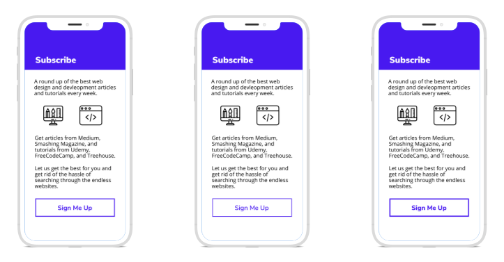
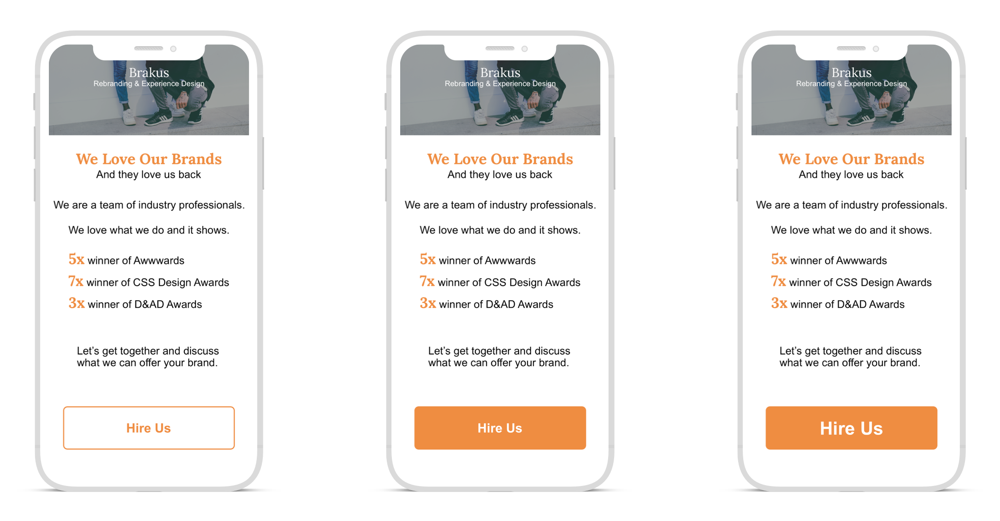
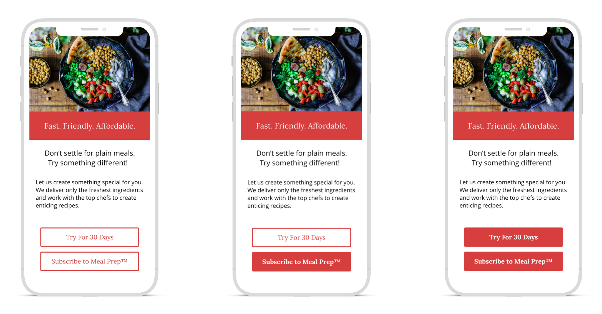

Research
A study on the design of CTA buttons
About
For my final Graphic Communications class, I had the opportunity to dive in to UX design.
I conducted a semester long project about the design of CTA buttons and how it affects conversion rates.
For the study, I chose to design three phone comps.
The phone comps had three different variations of button size, shape, and/or color.
And the survery asked users to "Choose a screen" as to not try to interfere with the user.
Lines
The first test was done for line thickness and font weight.
The design was for a mock site that gathers all of the trending web design and development articles.
The line thickness and font weight were changed for all three of the variations.
It was thought that the medium line and font would be favored but the majority chose the designs with the thickest lines.

Contrast
The second test looked at contrast as well as font size.
As the font got bigger there was more contrast between the font and button color.
The design of the test was chosen to be an "about" page for a design agency.
A ghost button was included to be the control as well.
More contrast is often preffered by users and the survey showed this was correct.
The button with the biggest font had the most responses and it makes sense as it was the easiest to read as well.

Ghost Button
The last phone test was on the inclusion of a ghost button as a secondary button.
Ghost buttons are not usually chosen as the primary button.
Because of this, ghost buttons can make great secondary buttons.
The design of the test was a mock meal prep company as they are rising in popularity.
Two of the variations contained at least one ghost button and the third was two solid buttons.
Despite believing the ghost button is a popular choice for a secondary button, most users chose the variation with two solid buttons.

Thoughts
I thoroughly enjoyed this project and getting the chance to have fun with design.
This project helped me put in to perspective how much design matters.
I have believed in the value of good design but it helps to see it happen in real time.
I look forward to doing more research in UX.